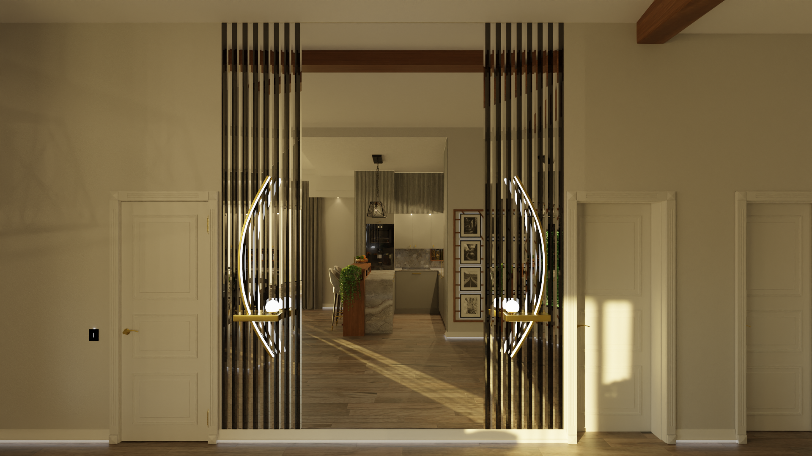

Focus
Architectural and interior visualisation, historic reconstructions, and environmental design — crafted with precision and creativity to present ideas clearly and effectively.
Get in touch ›Architectural and interior visualisation, historic reconstructions, and environmental design — crafted with precision and creativity to present ideas clearly and effectively.
Get in touch ›